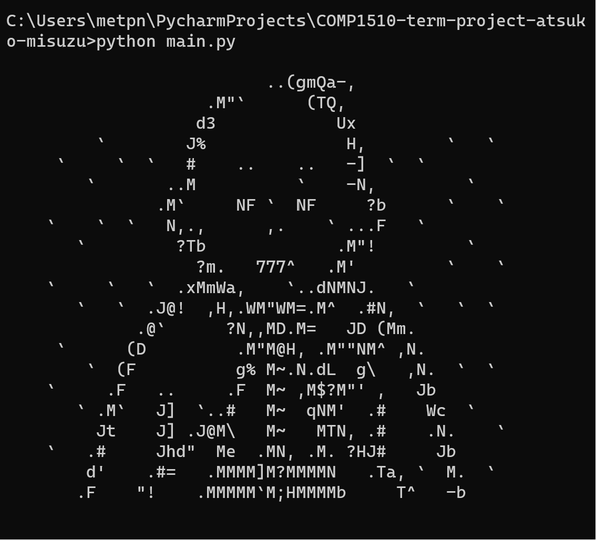

Kyoto Adventure - Python-based Command line game of Kyoto
(Nov 2023 — Dec 2023)
- Created a Python-based game played via command-line interface, set in a
Kyoto-inspired map grid of 10x10 squares, allowing movement in cardinal directions
- Players set their names and gain experience by solving Japan-related quizzes stored
in a JSON file, advancing levels as they progress
- Upon reaching level 3, engage in a matching game featuring a priest and a Hanafuda
card game at the goal; winning concludes the game, while reaching zero HP triggers a forced game over